目次
Lift, Splat, Shoot: Encoding Images from Arbitrary Camera Rigs by Implicitly Unprojecting to 3D
Jonah Philion、Sanja Fidler
NVIDIA、University of Toronto、Vector Institute
arXiv:2008.05711v1 [cs.CV]、2020年8月13日
翻訳について：原文 PDF は
05_Lift_Splat_Shoot_2008.05711.pdf（全 17 ページ）。本文、図の説明、図中ラベル、表、脚注、付録を訳出し、論文タイトルと参考文献は原文のまま掲載。図は原図を掲載し、英語ラベルの日本語訳を併記した。数式・数値・引用番号・コードの識別子は原文を維持。原文の記述に関する補足は「訳注」と明示し、本文と区別している。
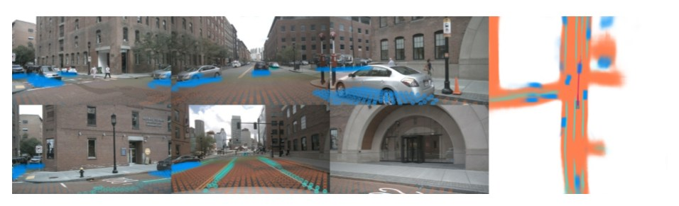
図1：我々は、マルチビューのカメラデータ（左）が与えられたとき、鳥瞰図（bird's-eye-view; BEV）座標系（右）で直接セマンティクスを推論するモデルを提案する。車両セグメンテーション（青）、走行可能領域（オレンジ）、車線セグメンテーション（緑）を示す。これらの BEV 予測は、その後入力画像上に投影し戻されている（左の点）。
要旨
自動運転車における知覚の目的は、複数のセンサからセマンティックな表現を抽出し、それらの表現を単一の「鳥瞰図」座標系に融合して、動作計画（motion planning）で利用できるようにすることである。我々は、任意の台数のカメラから得た画像データが与えられたとき、シーンの鳥瞰図表現を直接抽出する新しいエンドツーエンドのアーキテクチャを提案する。本手法の中核となるアイデアは、各画像を個別にカメラごとの特徴の視錐台（frustum）へと「持ち上げ（lift）」、続いてすべての視錐台をラスタ化された鳥瞰図グリッドへと「スプラット（splat）」することである。カメラリグ全体で学習することにより、我々のモデルが画像の表現方法だけでなく、すべてのカメラからの予測をシーンの単一のまとまった表現へと融合する方法をも学習でき、しかもキャリブレーション誤差に対して頑健であることを示す証拠を提示する。物体セグメンテーションや地図セグメンテーションといった標準的な鳥瞰図タスクにおいて、我々のモデルはすべてのベースラインおよび先行研究を上回る。動作計画のための密な表現を学習するという目標を追求し、我々のモデルが推論した表現によって、テンプレート軌道をネットワークが出力する鳥瞰図コストマップへ「シュート（shoot）」することで、解釈可能なエンドツーエンドの動作計画が可能になることを示す。我々は本手法を、LiDAR によるオラクルの奥行きを用いるモデルと比較評価する。コード付きのプロジェクトページ：https://nv-tlabs.github.io/lift-splat-shoot。
1 はじめに
コンピュータビジョンのアルゴリズムは一般に、画像を入力として受け取り、分類［19,30,16,17］のように座標系に依存しない予測か、物体検出、セマンティックセグメンテーション、パノプティックセグメンテーション［7,1,15,36］のように入力画像と同じ座標系での予測のいずれかを出力する。
このパラダイムは、そのままでは自動運転における知覚の設定に合致しない。自動運転では、それぞれ異なる座標系を持つ複数のセンサが入力として与えられ、知覚モデルは最終的に、図2に示すように、下流のプランナーが利用するための新しい座標系、すなわち自車（ego car）の座標系で予測を生成することを求められる。
単一画像のパラダイムをマルチビューの設定へ拡張するための、単純で実用的な戦略は数多く存在する。たとえば \(n\) 台のカメラからの 3D 物体検出の問題では、単一画像用の検出器をすべての入力画像に個別に適用し、その後、物体が検出されたカメラの内部パラメータと外部パラメータに従って各検出結果を回転・並進させて自車座標系へ移すことができる。単一ビューのパラダイムをマルチビューの設定へとこのように拡張すると、次の 3 つの有用な対称性が組み込まれる。
- 並進同変性：画像内のピクセル座標がすべてシフトすると、出力も同じ量だけシフトする。全畳み込み型の単一画像物体検出器はおおよそこの性質を持ち、マルチビューへの拡張はこの性質をそれらから受け継ぐ［11］［6］。
- 置換不変性：最終的な出力は \(n\) 台のカメラの特定の順序に依存しない。
- 自車座標系の等長変換同変性：画像を撮影したカメラが自車に対してどこに配置されていようと、与えられた画像の中では同じ物体が検出される。この性質の同値な言い方として、自車座標系の定義を回転・並進させることができ、出力もそれとともに回転・並進する。
上記の単純なアプローチの欠点は、単一画像検出器による後処理済みの検出結果を用いると、自車座標系でなされた予測からセンサ入力に至るまで遡って微分することができなくなる点である。その結果、モデルはカメラ間で情報を融合する最良の方法をデータ駆動的に学習することができない。また、下流のプランナーからのフィードバックを用いて知覚システムを自動的に改善するために誤差逆伝播を利用することもできない。
我々は、上で挙げた 3 つの対称性を設計上保持しつつ、エンドツーエンドで微分可能でもある「Lift-Splat」と名付けたモデルを提案する。第3節では、我々のモデルが文脈特徴の視錐台状の点群を生成することで画像を 3D へ「持ち上げ（lift）」、動作計画という下流タスクにとって都合のよい参照平面上へすべての視錐台を「スプラット（splat）」する方法を説明する。第3.3節では、解釈可能なエンドツーエンドの動作計画のために、提案軌道をこの参照平面へ「シュート（shoot）」する手法を提案する。第4節では、lift-splat モデルをカメラリグ全体で効率的に学習するための実装上の詳細を示す。第5節では、我々のモデルが、起こりうる入力の分布から得られる情報を融合するための効果的な仕組みを学習することを示す実験的証拠を提示する。
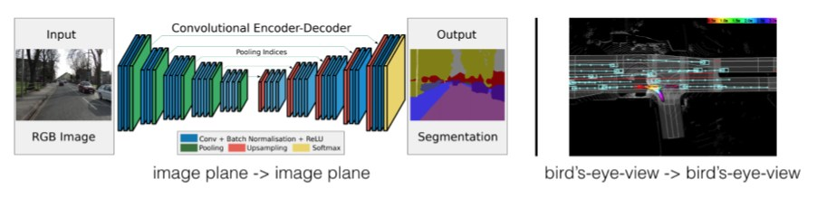
図2：（左、SegNet［1］より）従来、セマンティックセグメンテーションのようなコンピュータビジョンのタスクでは、入力画像と同じ座標系で予測を行う。（右、Neural Motion Planner［41］より）これに対して、自動運転における計画は一般に鳥瞰図座標系で行われる。我々のモデルは、マルチビュー画像からのエンドツーエンドの計画のために、与えられた鳥瞰図座標系で直接予測を行う。
図中ラベル：Input＝入力、RGB Image＝RGB 画像、Convolutional Encoder-Decoder＝畳み込みエンコーダ・デコーダ、Pooling Indices＝プーリングのインデックス、Conv + Batch Normalisation + ReLU＝畳み込み＋バッチ正規化＋ReLU、Pooling＝プーリング、Upsampling＝アップサンプリング、Output＝出力、Segmentation＝セグメンテーション、image plane -> image plane＝画像平面→画像平面、bird's-eye-view -> bird's-eye-view＝鳥瞰図→鳥瞰図
2 関連研究
複数のカメラからの画像データからまとまった表現を学習する我々のアプローチは、センサフュージョンおよび単眼物体検出における近年の研究を土台としている。Nutonomy［2］、Lyft［13］、Waymo［35］、Argo［3］による大規模なマルチモーダルデータセットにより、カメラ入力のみを条件として、自車周辺の 360° のシーン全体の完全な表現学習が最近になって可能になった。我々は Lift-Splat アーキテクチャによってその可能性を探る。
2.1 単眼物体検出
単眼物体検出器は、画像平面から所与の 3 次元参照座標系への変換をどのようにモデル化するかによって特徴づけられる。標準的な手法は、成熟した 2D 物体検出器を画像平面で適用し、続いて 2D ボックスを 3D ボックスへ回帰する第 2 のネットワークを学習するものである［12,26,31,27］。nuScenes ベンチマークにおける現在の最先端の 3D 物体検出器［31］は、誤った奥行きに起因する誤差と誤ったバウンディングボックスに起因する誤差とを切り分けようとする損失を用いて、標準的な 2D 検出器に奥行きも予測させるよう学習するアーキテクチャを用いている。これらのアプローチが 3D 物体検出ベンチマークで優れた性能を達成するのは、画像平面での検出によって、単眼の奥行き予測を覆う根本的な曖昧さの霧が切り離されるためである。
近年実験的に成功を収めているアプローチとして、単眼の奥行き予測を行うネットワークと鳥瞰図での検出を行うネットワークとを別々に学習するものがある［39］［40］。これらのアプローチは「疑似 LiDAR（pseudolidar）」の名で呼ばれる。疑似 LiDAR が実験的に成功している直観的な理由は、疑似 LiDAR によって、検出結果が最終的に評価される座標系であり、かつ画像平面と比べてユークリッド距離がより意味を持つ座標系で動作する鳥瞰図ネットワークを学習できるようになるからである。
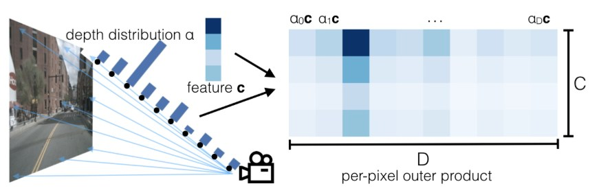
図3：我々のモデルの「lift」ステップを可視化したもの。各ピクセルについて、奥行きに関するカテゴリ分布 \(\alpha \in \triangle^{D-1}\)（左）と文脈ベクトル \(\mathbf{c} \in \mathbb{R}^C\)（左上）を予測する。光線上の各点における特徴は、\(\alpha\) と \(\mathbf{c}\) の外積によって決まる（右）。
図中ラベル：depth distribution α＝奥行き分布 α、feature c＝特徴 c、per-pixel outer product＝ピクセルごとの外積
単眼物体検出器の第 3 のカテゴリは、利用可能なすべてのカメラへの投影に基づいて特徴を取得する 3 次元物体プリミティブを用いる。Mono3D［4］は、地面上に 3 次元の候補を生成し、それらを利用可能な画像へ投影してスコア付けすることで、KITTI において最先端の単眼物体検出を達成した。Orthographic Feature Transform［29］は Mono3D を発展させ、固定されたボクセルの立方体を画像へ投影して特徴を収集し、続いてボクセル内の特徴を条件として 3D で検出を行う第 2 の「BEV」CNN を学習する。我々のモデルが対処する、これらのモデルの潜在的な性能上のボトルネックは、あるピクセルが、そのピクセルにおける物体の奥行きとは無関係に、すべてのボクセルへ同じ特徴を寄与してしまう点である。
2.2 鳥瞰図座標系での推論
鳥瞰図座標系で直接推論を行うために外部パラメータと内部パラメータを用いるモデルは、近年大きな関心を集めている。MonoLayout［21］は単一画像から鳥瞰図での推論を行い、もっともらしい隠れた物体をモデルが補完（inpaint）するよう促すために敵対的損失を用いる。同時期の研究である Pyramid Occupancy Networks［28］は、画像表現を鳥瞰図表現へ変換するトランスフォーマーアーキテクチャを提案している。同じく同時期の研究である FISHING Net［9］は、現在のタイムステップにおける物体のセグメンテーションと将来予測の両方を行うマルチビューアーキテクチャを提案している。第5節で、我々のモデルが先行研究を実験的に上回ることを示す。これらのアーキテクチャは、我々のものと同様に、機械学習グラフィックス分野の「マルチプレーン」画像［34,32,38,20］に類似したデータ構造を用いている。
3 手法
本節では、任意のカメラリグで撮影された画像データからシーンの鳥瞰図表現を学習するための我々のアプローチを示す。我々は、第1節で挙げた対称性を尊重するようにモデルを設計する。
形式的には、それぞれ外部パラメータ行列 \(\mathbf{E}_k \in \mathbb{R}^{3\times 4}\) と内部パラメータ行列 \(\mathbf{I}_k \in \mathbb{R}^{3\times 3}\) を伴う \(n\) 枚の画像 \(\{\mathbf{X}_k \in \mathbb{R}^{3\times H\times W}\}_n\) が与えられ、BEV 座標系におけるシーンのラスタ化された表現 \(\mathbf{y} \in \mathbb{R}^{C\times X\times Y}\) を求めることを目指す。外部パラメータ行列と内部パラメータ行列は合わせて、\(n\) 台の各カメラについて、参照座標 \((x,y,z)\) から局所ピクセル座標 \((h,w,d)\) への写像を定める。学習時にもテスト時にも、いかなる奥行きセンサへのアクセスも必要としない。
3.1 Lift：潜在的な奥行き分布
我々のモデルの第 1 段階は、カメラリグ内の各画像に対して独立に動作する。この段階の目的は、各画像を局所的な 2 次元座標系から、すべてのカメラで共有される 3 次元座標系へと「持ち上げる（lift）」ことである。
単眼センサフュージョンの難しさは、参照座標系の座標へ変換するには奥行きが必要であるにもかかわらず、各ピクセルに対応する「奥行き」が本質的に曖昧であることにある。我々の提案する解決策は、各ピクセルについて、取りうるすべての奥行きにおける表現を生成することである。
\(\mathbf{X} \in \mathbb{R}^{3\times H\times W}\) を外部パラメータ \(\mathbf{E}\) と内部パラメータ \(\mathbf{I}\) を伴う画像とし、\(p\) を画像座標 \((h,w)\) を持つ画像内のピクセルとする。各ピクセルに \(|D|\) 個の点 \(\{(h,w,d) \in \mathbb{R}^3 \mid d \in D\}\) を対応付ける。ここで \(D\) は離散的な奥行きの集合であり、たとえば \(\{d_0 + \Delta, ..., d_0 + |D|\Delta\}\) で定義される。この変換には学習可能なパラメータが一切ないことに注意されたい。我々は単に、与えられた画像に対してサイズ \(D \cdot H \cdot W\) の大きな点群を作成する。この構造は、マルチビュー合成の分野［38,32］がマルチプレーン画像と呼んできたものと等価であるが、我々の場合は各平面の特徴が \((r,g,b,\alpha)\) の値ではなく抽象的なベクトルである点が異なる。
点群内の各点の文脈ベクトルは、注意機構と離散的な奥行き推論の概念に合致するようにパラメータ化される。ピクセル \(p\) において、ネットワークはすべてのピクセルについて文脈 \(\mathbf{c} \in \mathbb{R}^C\) と奥行きに関する分布 \(\alpha \in \triangle^{|D|-1}\) を予測する。そして点 \(p_d\) に対応する特徴 \(\mathbf{c}_d \in \mathbb{R}^C\) を、ピクセル \(p\) の文脈ベクトルを \(\alpha_d\) でスケーリングしたものとして定義する。
\[ \mathbf{c}_d = \alpha_d \mathbf{c}. \tag{1} \]
もしネットワークが \(\alpha\) としてワンホットベクトルを予測したとすると、点 \(p_d\) における文脈は、疑似 LiDAR［39］のように単一の奥行き \(d^*\) に対してのみ非ゼロとなることに注意されたい。ネットワークが奥行きについて一様分布を予測した場合には、OFT［29］のように、ピクセル \(p\) に割り当てられた各点 \(p_d\) に対して奥行きと無関係に同じ表現を予測することになる。したがって我々のネットワークは理論上、画像からの文脈を鳥瞰図表現の特定の位置に配置するか、それとも（たとえば奥行きが曖昧な場合に）空間の光線全体に文脈を広げるかを選択することができる。
要約すると、理想的には、任意の空間位置で問い合わせることができ文脈ベクトルを返す関数 \(g_c : (x,y,z) \in \mathbb{R}^3 \to c \in \mathbb{R}^C\) を各画像について生成したい。離散的な畳み込みを活用するため、我々は空間を離散化することを選ぶ。カメラの場合、カメラから見える空間の体積は視錐台に対応する。図3に視覚的な説明を示す。
3.2 Splat：ピラープーリング
「lift」ステップが出力する大きな点群を変換するために、我々は pointpillars［18］のアーキテクチャに従う。「ピラー（pillar）」とは高さが無限大のボクセルである。すべての点を最も近いピラーに割り当て、和プーリング（sum pooling）を行って、鳥瞰図推論のための標準的な CNN で処理できる \(C \times H \times W\) のテンソルを作成する。lift-splat アーキテクチャ全体の概要を図4に示す。
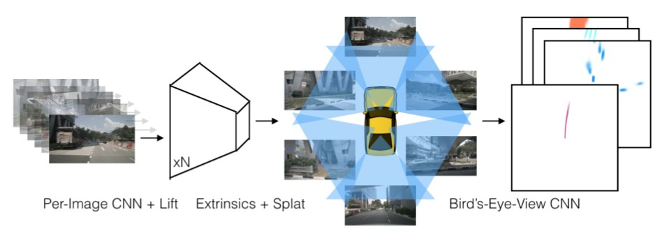
図4：Lift-Splat-Shoot の概要。我々のモデルは、\(n\) 枚の画像（左）とそれらに対応する外部パラメータおよび内部パラメータを入力として受け取る。「lift」ステップでは、個々の画像ごとに視錐台状の点群が生成される（中央左）。続いて外部パラメータと内部パラメータを用いて、各視錐台を鳥瞰図平面上へスプラットする（中央右）。最後に、鳥瞰図 CNN が鳥瞰図表現を処理し、BEV セマンティックセグメンテーションまたは計画を行う（右）。
図中ラベル：Per-Image CNN + Lift＝画像ごとの CNN＋Lift、Extrinsics + Splat＝外部パラメータ＋Splat、Bird's-Eye-View CNN＝鳥瞰図 CNN、xN＝×N
OFT［29］がプーリングステップを高速化するために積分画像を用いるのと同様に、我々は和プーリングを高速化するために類似の手法を適用する。生成される点群のサイズを考えると、効率性はモデルの学習にとって極めて重要である。各ピラーをパディングしてから和プーリングを行う代わりに、パッキングを用い、和プーリングに「cumsum トリック」を活用することでパディングを回避する。第4.2節で説明するように、この演算は効率的に計算できる解析的な勾配を持ち、autograd を高速化できる。
3.3 Shoot：動作計画
我々の Lift-Splat モデルの重要な側面は、カメラのみの入力から動作計画のためのコストマップをエンドツーエンドで学習できることである。テスト時には、推論されたコストマップを用いた計画は、さまざまな軌道を「シュート（shoot）」し、それらのコストをスコア付けし、その後最もコストの低い軌道に従って行動することで実現できる［25］。第5.6節では、エンドツーエンドで解釈可能な動作計画を可能にする我々のモデルの能力を検証し、その性能を LiDAR ベースのエンドツーエンドのニューラル動作プランナーと比較する。
我々は「計画」を、センサ観測を条件とした、自車に対する \(K\) 個のテンプレート軌道
\[ \mathcal{T} = \{\tau_i\}_K = \{\{x_j, y_j, t_j\}_T\}_K \]
上の分布 \(p(\tau|o)\) を予測することとして定式化する。我々のアプローチは、最近提案された Neural Motion Planner（NMP）［41］に着想を得ている。NMP は、点群と高精度地図を条件として、提案された軌道のスコア付けに使用できるコストボリュームを生成するアーキテクチャである。
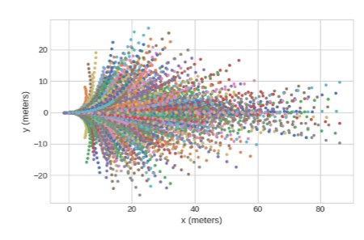
図5：学習時およびテスト時に我々がコストマップ上へ「シュート」する 1K 個の軌道テンプレートを可視化したもの。学習時には、各テンプレート軌道のコストが計算され、テンプレート上の 1K 次元のボルツマン分布として解釈される。テスト時には、この分布の argmax を選び、選ばれたテンプレートに従って行動する。
図中ラベル：x (meters)＝x（メートル）、y (meters)＝y（メートル）
NMP で提案されたハードマージン損失の代わりに、我々は計画を \(K\) 個のテンプレート軌道の集合に対する分類として定式化する。計画問題のコストボリューム的な性質を活用するため、\(K\) 個のテンプレート軌道上の分布が次の形をとるように強制する。
\[ p(\tau_i|o) = \frac{\exp\left(-\sum\limits_{x_i,y_i \in \tau_i} c_o(x_i,y_i)\right)}{\sum\limits_{\tau \in \mathcal{T}} \exp\left(-\sum\limits_{x_i,y_i \in \tau} c_o(x_i,y_i)\right)} \tag{2} \]
ここで \(c_o(x,y)\) は、観測 \(o\) が与えられたときに予測されたコストマップを位置 \(x,y\) で参照することで定義され、したがってエキスパート軌道の対数確率を最適化することによってデータからエンドツーエンドで学習できる。ラベルについては、正解軌道が与えられたとき、テンプレート軌道 \(\mathcal{T}\) の中から L2 距離での最近傍を計算し、交差エントロピー損失で学習する。この \(p(\tau_i|o)\) の定義により、NMP［41］のようにハードマージン損失を定義することなく、解釈可能な空間的コスト関数を学習することができる。
実際には、多数のエキスパート軌道に対して K-Means を実行することで、テンプレート軌道の集合を決定する。我々の実験で用いる、コストマップ上への「シュート」に使用されるテンプレート軌道の集合を図5に可視化する。
4 実装
4.1 アーキテクチャの詳細
我々のモデルのニューラルアーキテクチャは OFT［29］に類似している。OFT と同様に、我々のモデルは 2 つの大きなネットワークバックボーンを持つ。一方のバックボーンは、各画像から生成された点群を特徴量化するために、各画像に対して個別に動作する。もう一方のバックボーンは、点群が参照座標系のピラーへスプラットされた後に、その点群に対して動作する。2 つのネットワークは、第3節で定義し図4で可視化した我々の lift-splat 層によって結合される。
各画像に独立に動作するネットワークについては、ベースラインを含むすべてのモデルのすべての実験において、Imagenet［30］で事前学習された EfficientNet-B0［37］の層を利用する。EfficientNet は、資源が限られた条件下で網羅的なアーキテクチャ探索によって見出されたネットワークアーキテクチャであり、深さ、幅、解像度が比例してスケールアップされている。我々は、EfficientNet が、収束までにより多くの最適化ステップを要するという小さな不都合はあるものの、すべてのモデルにわたって ResNet-18/34/50［8］と比べて高い性能を可能にすることを見出した。
鳥瞰図ネットワークには、PointPillars［18］と同様の ResNet ブロックの組み合わせを用いる。具体的には、カーネル 7・ストライド 2 の畳み込みに続いてバッチ正規化（batchnorm）［10］と ReLU［22］を適用した後、ResNet-18 の最初の 3 つのメタ層を通して、異なる解像度の 3 つの鳥瞰図表現 \(x_1, x_2, x_3\) を得る。続いて \(x_3\) をスケール係数 4 でアップサンプリングし、\(x_1\) と連結し、resnet ブロックを適用し、最後に 2 倍のアップサンプリングを行って、元の入力鳥瞰図疑似画像の解像度に戻す。最終的なネットワークの学習可能なパラメータ数は 14.3M である。
我々のモデルの「解像度」を決めるハイパーパラメータがいくつかある。まず、入力画像のサイズ \(H \times W\) がある。以下のすべての実験において、入力画像をサイズ \(128 \times 352\) にリサイズ・クロップし、それに応じて外部パラメータと内部パラメータを調整する。ネットワークのもう 1 つの重要なハイパーパラメータは、鳥瞰図グリッド \(X \times Y\) の解像度のサイズである。我々の実験では、\(x\) と \(y\) の両方について -50 メートルから 50 メートルまで、0.5 メートル × 0.5 メートルのセルでビンを設定する。したがって得られるグリッドは \(200 \times 200\) となる。最後に、ネットワークが予測する奥行きの解像度を決める \(D\) の選択がある。我々は \(D\) を 4.0 メートルから 45.0 メートルまで 1.0 メートル間隔に制限する。これらのハイパーパラメータとアーキテクチャ設計の選択により、モデルの順伝播は Titan V GPU 上で 35 hz で動作する。
4.2 視錐台プーリングの累積和トリック
センサリグ全体のデータから学習するには、学習の効率性が極めて重要である。第3節でピラー間のプーリングとして最大値プーリングではなく和プーリングを選んだのは、我々の「累積和（cumulative sum）」トリックによって、パディングに起因する過剰なメモリ使用を避けられるからである。「累積和トリック」とは、すべての点をビン ID に従ってソートし、すべての特徴について累積和を計算し、その後ビン区間の境界における累積和の値を差し引くことによって和プーリングを実行できるという観察である。3 つのステップすべてを autograd で逆伝播させる代わりに、モジュール全体としての解析的な勾配を導出でき、学習が 2 倍高速化される。この層は、\(n\) 枚の画像が生成する視錐台を、カメラ台数 \(n\) に依存しない固定次元の \(C \times H \times W\) テンソルへと変換する処理を担うため、「視錐台プーリング（Frustum Pooling）」と呼ぶ。コードはプロジェクトページで入手できる。
5 実験と結果
我々の手法を評価するために、nuScenes［2］と Lyft Level 5［13］データセットを用いる。nuScenes は、それぞれ長さ 20 秒の 1k シーンから得られた点群データと画像データからなる大規模データセットである。両データセットのカメラリグは 6 台のカメラで構成され、それぞれおおよそ前方、左前方、右前方、左後方、右後方、後方を向いている。すべてのデータセットにおいて、カメラの視野の間にはわずかな重なりがある。カメラの外部パラメータと内部パラメータは、両データセットを通じて変動する。我々のモデルはカメラキャリブレーションを条件とするため、これらの変動に対処することができる。
我々は、物体ベースのセグメンテーションタスク 2 つと、地図ベースのタスク 2 つを定義する。物体セグメンテーションタスクでは、3D バウンディングボックスを鳥瞰図平面へ投影することで、鳥瞰図における正解ターゲットを得る。nuScenes における乗用車（Car）セグメンテーションは、クラス vehicle.car のすべてのバウンディングボックスを指し、nuScenes における車両（Vehicle）セグメンテーションは、メタカテゴリ vehicle のすべてのバウンディングボックスを指す。Lyft における乗用車セグメンテーションはクラス car のすべてのバウンディングボックスを指し、nuScenes における車両セグメンテーションは、クラスが \(\in\) { car, truck, other_vehicle, bus, bicycle } であるすべてのバウンディングボックスを指す（訳注：文脈上、この「nuScenes」は「Lyft」の誤りと考えられる）。地図作成については、提供されている 6 自由度（6 DOF）の自己位置推定を用いて nuScenes の地図レイヤを自車座標系へ変換し、ラスタ化する。
すべての物体セグメンテーションタスクについて、正例重み 1.0 の二値交差エントロピーで学習する。車線セグメンテーションについては正例重みを 5.0 に設定し、道路セグメンテーションについては正例重み 1.0 を用いる［24］。すべての場合において、学習率 \(1e-3\)、重み減衰 \(1e-7\) の Adam［14］を用いて 300k ステップ学習する。PyTorch フレームワーク［23］を使用する。
Lyft データセットには標準的な学習／検証の分割が付属していない。nuScenes とおおよそ同じサイズの検証セット（Lyft は 6048 サンプル、nuScenes は 6019 サンプル）を得るために、Lyft のシーンのうち 48 シーンを検証用に分離する。
5.1 ベースラインの説明
通常の CNN とは異なり、我々のモデルは初期化の時点で 3 次元構造を備えている。標準的なモジュールで構成された CNN と比較することで、この構造が良好な性能にとって決定的に重要であることを示す。我々は MonoLayout［21］に類似したアーキテクチャに従う。MonoLayout も画像のみから鳥瞰図ラベルを出力する CNN を学習するが、アーキテクチャの設計において帰納バイアスを活用せず、単一カメラのみで学習する。このアーキテクチャは、すべての画像から独立に特徴を抽出する EfficientNet-B0 バックボーンを持つ。表現を連結し、双線形補間を行って、我々のモデルの出力と同様の \(\mathbb{R}^{X\times Y}\) テンソルへとアップサンプリングする。我々のモデルとおおよそ同じパラメータ数を持つようにネットワークを設計する。このベースラインの性能が低いことは、マルチビューの設定において第1節の対称性 3 をモデルに明示的に組み込むことがいかに重要であるかを示している。
我々のモデルが有用な暗黙的奥行きを予測していることを示すために、事前学習済み CNN の重みを凍結した我々のモデル、および OFT［29］と比較する。表1と表2に示すように、我々はすべてのタスクでこれらのベースラインを上回る。また、同じセグメンテーションタスクでベンチマークを行っている同時期の研究［9］［28］も上回る。結果として、このアーキテクチャは、下流タスクにとって効果的な奥行き分布と効果的な文脈表現の両方を学習している。
| nuScenes | Lyft | |||
|---|---|---|---|---|
| 乗用車（Car） | 車両（Vehicles） | 乗用車（Car） | 車両（Vehicles） | |
| CNN | 22.78 | 24.25 | 30.71 | 31.91 |
| Frozen Encoder（凍結エンコーダ） | 25.51 | 26.83 | 35.28 | 32.42 |
| OFT | 29.72 | 30.05 | 39.48 | 40.43 |
| Lift-Splat（Us） | 32.06 | 32.07 | 43.09 | 44.64 |
| PON*［28］ | 24.7 | - | - | - |
| FISHING*［9］ | - | 30.0 | - | 56.0 |
表1：BEV 座標系におけるセグメンテーション IOU
| 走行可能領域（Drivable Area） | 車線境界（Lane Boundary） | |
|---|---|---|
| CNN | 68.96 | 16.51 |
| Frozen Encoder（凍結エンコーダ） | 61.62 | 16.95 |
| OFT | 71.69 | 18.07 |
| Lift-Splat（Us） | 72.94 | 19.96 |
| PON*［28］ | 60.4 | - |
表2：BEV 座標系における地図 IOU
5.2 セグメンテーション
我々の Lift-Splat モデルが、鳥瞰図座標系での教師信号が与えられれば、セマンティックな 3D 表現を学習できることを示す。物体セグメンテーションタスクの結果を表1に、地図セグメンテーションタスクの結果を表2に示す。すべてのベンチマークにおいて、我々はベースラインを上回る。暗黙的に 3D へ逆投影することによる性能向上の程度は、特に物体セグメンテーションにおいて大きいと我々は考える。同時期の 2 つの研究［9］［28］が報告している IOU スコアも掲載しているが、これらの論文はいずれも鳥瞰図グリッドの定義が異なり、Lyft データセットの検証分割も異なるため、真の意味での比較はまだできない。
5.3 頑健性
鳥瞰図 CNN はカメラ間で情報を融合する方法をデータから学習するため、外部パラメータに偏りがある、あるいはカメラが故障するといった、自動運転で生じる単純なノイズモデルに対して頑健になるようにモデルを学習させることができる。図6では、学習中にカメラをドロップすることで、我々のモデルがテスト時にドロップされたカメラをよりうまく扱えるようになることを確認する。実際、6 台すべてのカメラが存在する場合に最も性能が高いモデルは、学習中にすべてのサンプルから 1 台のカメラをランダムにドロップして学習したモデルである。センサドロップアウトは、ほかのドロップアウトの変種［33］［5］と同様に、異なるカメラ上の画像間の相関をモデルに学習させるのだと我々は考える。図6の左では、ノイズを含む外部パラメータでモデルを学習させることで、テスト時の性能が向上しうることを示す。テスト時のノイズが小さい場合には、BEV CNN がスプラットの位置をより確信をもって信頼できるため、外部パラメータにノイズを一切加えずに学習したモデルが最も良い性能を示す。外部パラメータのノイズが大きい場合でも、我々のモデルは良好な性能を維持する。
図7では、nuScenes における乗用車セグメンテーションの性能に対する各カメラの「重要度」を測定する。nuScenes でカメラを失うことは、車の周辺領域の特定の部分にセンサ計測が一切ないことを意味し、その結果、性能はセンサリグ全体を用いた場合の性能によって厳密に上から抑えられることに注意されたい。カメラの欠落によりネットワークが補完（inpaint）を行う定性的な例を図8に示す。このようにして各カメラの重要度を測定し、安全のためにセンサの冗長性がどこでより重要となるかを示唆する。
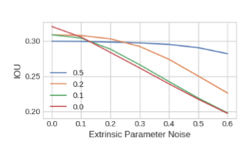
（a）テスト時の外部パラメータノイズ
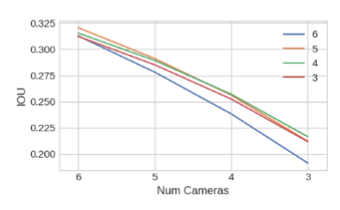
（b）テスト時のカメラドロップアウト
図6：一般的なセンサ誤差の発生源に対して耐性を持つように我々のネットワークを学習させることが可能であることを示す。左では、外部パラメータに大きなノイズを加えて学習することで（青）、ネットワークがテスト時の外部パラメータノイズに対してより頑健になることを示す。右では、学習中に各バッチからカメラをランダムにドロップすることで（赤）、テスト時のセンサドロップアウトに対する頑健性が高まることを示す。
図中ラベル：Extrinsic Parameter Noise＝外部パラメータノイズ、Num Cameras＝カメラ台数、凡例（a）の 0.5／0.2／0.1／0.0 は学習時に加えた外部パラメータノイズの大きさ、凡例（b）の 6／5／4／3 は学習時に用いたカメラ台数を表すと考えられる
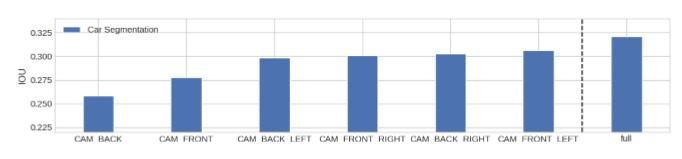
図7：各カメラが欠落しているときの乗用車セグメンテーションの intersection-over-union（IoU）を測定する。nuScenes のカメラリグの後方カメラはより広い視野を持つため、このカメラを失うと、カメラリグ全体が与えられた場合の性能（右側の「full」とラベル付けされたもの）と比べて最大の性能低下が生じるのは直観的である。
図中ラベル：Car Segmentation＝乗用車セグメンテーション、CAM BACK＝後方カメラ、CAM FRONT＝前方カメラ、CAM BACK LEFT＝左後方カメラ、CAM FRONT RIGHT＝右前方カメラ、CAM BACK RIGHT＝右後方カメラ、CAM FRONT LEFT＝左前方カメラ、full＝全カメラ（横軸は欠落させたカメラを示す）
| IOU | |
|---|---|
| \(4\) | 26.53 |
| \(4 + 1_{fl}\) | 27.35 |
| \(4 + 1_{bl}\) | 27.27 |
| \(4 + 1_{bl} + 1_{fl}\) | 27.94 |
表3：nuScenes データセットの 6 台のカメラのうち 4 台のみの画像で学習する。その後、新しいカメラ（\(1_{bl}\) は「左後方」カメラ、\(1_{fl}\) は「左前方」カメラに対応する）を加えて評価し、学習中に見ていないセンサを追加するにつれてモデルの性能が厳密に向上することを見出した。
5.4 ゼロショットでのカメラリグ転移
次に、Lift-Splat の汎化能力を検証する。最初の実験では、nuScenes カメラリグのうち一部のカメラの画像のみで学習し、テスト時には残りの 2 台のカメラの画像にもアクセスできる場合の、我々のモデルの性能を測定する。表3では、再学習を一切行わなくても、テスト時に追加のカメラが利用可能になると、乗用車セグメンテーションにおける我々のモデルの性能が向上することを示す。
上記の実験をさらに一歩進め、nuScenes データのみで学習した場合に、我々のモデルが Lyft のカメラリグにどの程度よく汎化するかを検証する。転移の定性的な結果を図9に、ベースラインの汎化性能とのベンチマーク比較を表4に示す。
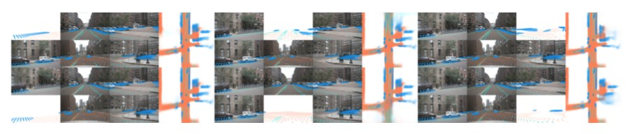
図8：ある単一のタイムスタンプについて、各カメラを 1 台ずつ取り除き、カメラの喪失がネットワークの予測にどのように影響するかを可視化する。どの場合でも、欠落したカメラがカバーしていた領域はよりぼやけたものになる。前方カメラを取り除いた場合（上段中央）、ネットワークは自車前方の車線と走行可能領域を外挿し、また右上のカメラで角しか見えていない車の車体を外挿する。
| Lyft 乗用車（Lyft Car） | Lyft 車両（Lyft Vehicle） | |
|---|---|---|
| CNN | 7.00 | 8.06 |
| Frozen Encoder（凍結エンコーダ） | 15.08 | 15.82 |
| OFT | 16.25 | 16.27 |
| Lift-Splat（Us） | 21.35 | 22.59 |
表4：nuScenes でモデルを学習し、Lyft で評価する。Lyft のカメラは nuScenes のカメラとはまったく異なるが、我々のモデルはベースラインよりもはるかに良く汎化することに成功している。我々のモデルが、表1と表2の標準ベンチマークよりも差を広げていることに注意されたい。
5.5 オラクルの奥行きとのベンチマーク比較
我々のモデルを、LIDAR 点群から得られる真の奥行きを用いる pointpillars［18］アーキテクチャと比較する。表5に示すように、すべてのタスクにわたって、我々のアーキテクチャは LIDAR の単一スキャンで学習した pointpillars よりもわずかに性能が劣る。しかし、少なくとも走行可能領域のセグメンテーションにおいては、LIDAR の性能に迫っていることを指摘しておく。一般に現実世界では、すべての車線が LiDAR スキャンで見えるわけではない。今後、より幅広い環境で性能を測定したいと考えている。
我々のモデルが LIDAR とどのように異なるかについての洞察を得るために、自車からの距離と気象条件という 2 つの制御変量に応じて、乗用車セグメンテーションの性能がどのように変化するかをプロットする。シーンの天候は、nuScenes データセットのすべてのシーントークンに付随する説明文字列から判定する。結果を図10に示す。予想どおり、夜間のシーンでは我々のモデルの性能が pointpillars よりも大幅に劣ることがわかる。また、両モデルとも奥行きが増すにつれておおよそ線形に性能が低下することもわかる。
5.6 動作計画
最後に、Lift-Splat が出力する表現をコスト関数となるように学習させることで、計画を行う我々のモデルの能力を評価する。我々が生成する軌道は長さ 5 秒で、0.25 秒間隔である。テンプレートを得るために、nuScenes の学習セットに含まれるすべての自車軌道に対して \(K = 1000\) の K-Means を当てはめる。テスト時には、L2 ノルムのもとで正解軌道に最も近いテンプレートをネットワークがどの程度うまく予測できるかを測定する。この実験の正解ターゲットは正解の 3D バウンディングボックスよりも桁違いに安価に取得できるため、このタスクは自動運転にとって重要な実験である。また、このタスクはカメラベースのアプローチと LiDAR ベースのアプローチの性能をベンチマーク比較するうえでも重要である。というのも、カメラのみによる 3D 物体検出の上限は確かに LiDAR のみによるものによって上から抑えられるが、カメラのみを用いる最適なプランナーは、原理的には LiDAR のみから学習した最適なプランナーの性能を上から抑えるはずだからである。
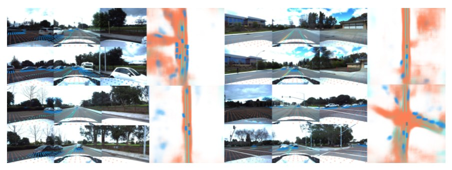
図9：テスト時にまったく新しいカメラリグが与えられたときに我々のモデルがどのように動作するかを定性的に示す。道路セグメンテーションをオレンジ、車線セグメンテーションを緑、車両セグメンテーションを青で示す。
| 走行可能領域（Drivable Area） | 車線境界（Lane Boundary） | nuScenes | Lyft | |||
|---|---|---|---|---|---|---|
| 乗用車（Car） | 車両（Vehicle） | 乗用車（Car） | 車両（Vehicle） | |||
| Oracle Depth（1 scan） | 74.91 | 25.12 | 40.26 | 44.48 | 74.96 | 76.16 |
| Oracle Depth（\(\gt\) 1 scan） | 76.96 | 26.80 | 45.36 | 49.51 | 75.42 | 76.49 |
| Lift-Splat（Us） | 70.81 | 19.58 | 32.06 | 32.07 | 43.09 | 44.64 |
表5：LiDAR によるオラクルの奥行きを用いるモデルと比較すると、まだ改善の余地がある。LiDAR を上回るのに必要な奥行き推定を得るには、カメラリグからの動画による推論がおそらく必要である。（訳注：Oracle Depth（1 scan）＝オラクル奥行き（LiDAR 1 スキャン）、Oracle Depth（> 1 scan）＝オラクル奥行き（LiDAR 複数スキャン）。なお Lift-Splat の走行可能領域 70.81・車線境界 19.58 は、表2の値 72.94・19.96 と一致していない。原文のまま掲載した）
計画実験の定性的な結果を図11に示す。pointpillars とのベンチマーク比較による実験結果を表6に示す。出力された軌道は、道路境界に沿って進む、横断歩道やブレーキをかけている車両の後ろで停止するといった望ましい振る舞いを示している。
6 結論
本研究では、任意のカメラリグから鳥瞰図表現を推論するよう設計されたアーキテクチャを提示した。我々のモデルは、学習時にもテスト時にも正解の奥行きデータに一切アクセスすることなく、鳥瞰図座標系でセマンティクスを表現するモデルの能力を検証するよう設計された一連のベンチマークセグメンテーションタスクにおいて、ベースラインを上回る。我々は、単純なキャリブレーションノイズのモデルに対してネットワークを頑健にするための、モデルの学習方法を提示した。最後に、このモデルが、軌道シューティングのパラダイムに従うエンドツーエンドの動作計画を可能にすることを示した。点群からの正解奥行きデータのみを用いる類似ネットワークの性能に並び、さらには上回るためには、今後の研究では、本研究で扱った単一のタイムステップではなく、複数のタイムステップの画像を条件とする必要があるだろう。
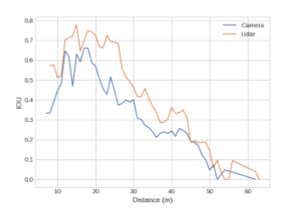
（a）距離に対する IOU
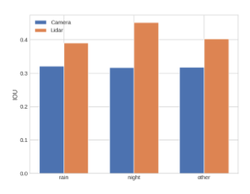
（b）天候に対する IOU
図10：我々のモデルの性能が奥行きと天候によってどのように変化するかを比較する。予想どおり、夜間には我々のモデルの性能は pointpillars と比べて低下する。
図中ラベル：Camera＝カメラ、Lidar＝LiDAR、Distance (m)＝距離（m）、rain＝雨、night＝夜間、other＝その他
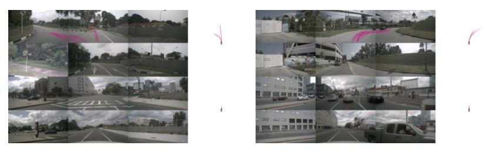
図11：1k 個のテンプレートのうち上位 10 位までにランク付けされた軌道を表示する。動画シーケンスはプロジェクトページで提供している。我々のモデルは、単一のタイムスタンプの観測から二峰性の分布やカーブを予測する。我々のモデルは車の速度にアクセスできないため、横断歩道やブレーキランプの近くで低速の軌道を予測することは注目に値する。
| Top 5 | Top 10 | Top 20 | |
|---|---|---|---|
| Lidar（1 scan） | 19.27 | 28.88 | 41.93 |
| Lidar（10 scans） | 24.99 | 35.39 | 49.84 |
| Lift-Splat（Us） | 15.52 | 19.94 | 27.99 |
表6：計画は 1K 個のテンプレート軌道の集合の中での分類として定式化されているため、top-5、top-10、top-20 の正解率を測定する。我々のモデルは、汎化の点でまだ LiDAR ベースのアプローチに遅れをとっていることがわかる。我々のモデルが出力する軌道の定性的な例を図11に示す。
参考文献
参考文献は原文のまま掲載した。
- Badrinarayanan, V., Kendall, A., Cipolla, R.: Segnet: A deep convolutional encoder-decoder architecture for image segmentation. CoRR abs/1511.00561 (2015), http://arxiv.org/abs/1511.00561
- Caesar, H., Bankiti, V., Lang, A.H., Vora, S., Liong, V.E., Xu, Q., Krishnan, A., Pan, Y., Baldan, G., Beijbom, O.: nuscenes: A multimodal dataset for autonomous driving. CoRR abs/1903.11027 (2019), http://arxiv.org/abs/1903.11027
- Chang, M.F., Ramanan, D., Hays, J., Lambert, J., Sangkloy, P., Singh, J., Bak, S., Hartnett, A., Wang, D., Carr, P., et al.: Argoverse: 3d tracking and forecasting with rich maps. IEEE/CVF Conference on Computer Vision and Pattern Recognition (CVPR) (Jun 2019)
- Chen, X., Kundu, K., Zhang, Z., Ma, H., Fidler, S., Urtasun, R.: Monocular 3d object detection for autonomous driving. In: IEEE/CVF Conference on Computer Vision and Pattern Recognition (CVPR). pp. 2147–2156 (06 2016)
- Ghiasi, G., Lin, T., Le, Q.V.: Dropblock: A regularization method for convolutional networks. CoRR abs/1810.12890 (2018), http://arxiv.org/abs/1810.12890
- Goodfellow, I., Bengio, Y., Courville, A.: Deep Learning. MIT Press (2016), http://www.deeplearningbook.org
- He, K., Gkioxari, G., Dollár, P., Girshick, R.B.: Mask R-CNN. CoRR abs/1703.06870 (2017), http://arxiv.org/abs/1703.06870
- He, K., Zhang, X., Ren, S., Sun, J.: Deep residual learning for image recognition. CoRR abs/1512.03385 (2015), http://arxiv.org/abs/1512.03385
- Hendy, N., Sloan, C., Tian, F., Duan, P., Charchut, N., Xie, Y., Wang, C., Philbin, J.: Fishing net: Future inference of semantic heatmaps in grids (2020)
- Ioffe, S., Szegedy, C.: Batch normalization: Accelerating deep network training by reducing internal covariate shift. CoRR abs/1502.03167 (2015), http://arxiv.org/abs/1502.03167
- Kayhan, O.S., Gemert, J.C.v.: On translation invariance in cnns: Convolutional layers can exploit absolute spatial location. In: Proceedings of the IEEE/CVF Conference on Computer Vision and Pattern Recognition (CVPR) (June 2020)
- Kehl, W., Manhardt, F., Tombari, F., Ilic, S., Navab, N.: SSD-6D: making rgb-based 3d detection and 6d pose estimation great again. CoRR abs/1711.10006 (2017)
- Kesten, R., Usman, M., Houston, J., Pandya, T., Nadhamuni, K., Ferreira, A., Yuan, M., Low, B., Jain, A., Ondruska, P., Omari, S., Shah, S., Kulkarni, A., Kazakova, A., Tao, C., Platinsky, L., Jiang, W., Shet, V.: Lyft level 5 av dataset 2019. urlhttps://level5.lyft.com/dataset/ (2019)
- Kingma, D.P., Ba, J.: Adam: A method for stochastic optimization. CoRR abs/1412.6980 (2014)
- Kirillov, A., He, K., Girshick, R.B., Rother, C., Dollár, P.: Panoptic segmentation. CoRR abs/1801.00868 (2018), http://arxiv.org/abs/1801.00868
- Krizhevsky, A.: Learning multiple layers of features from tiny images (2009)
- Krizhevsky, A., Sutskever, I., Hinton, G.E.: Imagenet classification with deep convolutional neural networks. In: Pereira, F., Burges, C.J.C., Bottou, L., Weinberger, K.Q. (eds.) Advances in Neural Information Processing Systems 25, pp. 1097–1105. Curran Associates, Inc. (2012), http://papers.nips.cc/paper/4824-imagenet-classification-with-deep-convolutional-neural-networks.pdf
- Lang, A.H., Vora, S., Caesar, H., Zhou, L., Yang, J., Beijbom, O.: Pointpillars: Fast encoders for object detection from point clouds. CoRR abs/1812.05784 (2018)
- Lecun, Y., Bottou, L., Bengio, Y., Haffner, P.: Gradient-based learning applied to document recognition. In: Proceedings of the IEEE. pp. 2278–2324 (1998)
- Lombardi, S., Simon, T., Saragih, J., Schwartz, G., Lehrmann, A., Sheikh, Y.: Neural volumes. ACM Transactions on Graphics 38(4), 114 (Jul 2019). https://doi.org/10.1145/3306346.3323020, http://dx.doi.org/10.1145/3306346.3323020
- Mani, K., Daga, S., Garg, S., Shankar, N.S., Jatavallabhula, K.M., Krishna, K.M.: Monolayout: Amodal scene layout from a single image. ArXiv abs/2002.08394 (2020)
- Nair, V., Hinton, G.E.: Rectified linear units improve restricted boltzmann machines. In: ICML (2010)
- Paszke, A., Gross, S., Massa, F., Lerer, A., Bradbury, J., Chanan, G., Killeen, T., Lin, Z., Gimelshein, N., Antiga, L., Desmaison, A., Köpf, A., Yang, E., DeVito, Z., Raison, M., Tejani, A., Chilamkurthy, S., Steiner, B., Fang, L., Bai, J., Chintala, S.: Pytorch: An imperative style, high-performance deep learning library. In: NeurIPS (2019)
- Philion, J.: Fastdraw: Addressing the long tail of lane detection by adapting a sequential prediction network. In: Proceedings of the IEEE/CVF Conference on Computer Vision and Pattern Recognition (CVPR) (June 2019)
- Philion, J., Kar, A., Fidler, S.: Learning to evaluate perception models using planner-centric metrics. In: Proceedings of the IEEE/CVF Conference on Computer Vision and Pattern Recognition (CVPR) (June 2020)
- Poirson, P., Ammirato, P., Fu, C., Liu, W., Kosecka, J., Berg, A.C.: Fast single shot detection and pose estimation. CoRR abs/1609.05590 (2016)
- Qin, Z., Wang, J., Lu, Y.: Monogrnet: A geometric reasoning network for monocular 3d object localization. Proceedings of the AAAI Conference on Artificial Intelligence 33, 8851–8858 (07 2019). https://doi.org/10.1609/aaai.v33i01.33018851
- Roddick, T., Cipolla, R.: Predicting semantic map representations from images using pyramid occupancy networks. In: Proceedings of the IEEE/CVF Conference on Computer Vision and Pattern Recognition (CVPR) (June 2020)
- Roddick, T., Kendall, A., Cipolla, R.: Orthographic feature transform for monocular 3d object detection. CoRR abs/1811.08188 (2018)
- Russakovsky, O., Deng, J., Su, H., Krause, J., Satheesh, S., Ma, S., Huang, Z., Karpathy, A., Khosla, A., Bernstein, M., Berg, A.C., Fei-Fei, L.: Imagenet large scale visual recognition challenge (2014)
- Simonelli, A., Bulò, S.R., Porzi, L., López-Antequera, M., Kontschieder, P.: Disentangling monocular 3d object detection. CoRR abs/1905.12365 (2019)
- Srinivasan, P.P., Mildenhall, B., Tancik, M., Barron, J.T., Tucker, R., Snavely, N.: Lighthouse: Predicting lighting volumes for spatially-coherent illumination (2020)
- Srivastava, N., Hinton, G., Krizhevsky, A., Sutskever, I., Salakhutdinov, R.: Dropout: A simple way to prevent neural networks from overfitting. Journal of Machine Learning Research 15, 1929–1958 (2014)
- Su, H., Jampani, V., Sun, D., Maji, S., Kalogerakis, E., Yang, M., Kautz, J.: Splatnet: Sparse lattice networks for point cloud processing. CoRR abs/1802.08275 (2018), http://arxiv.org/abs/1802.08275
- Sun, P., Kretzschmar, H., Dotiwalla, X., Chouard, A., Patnaik, V., Tsui, P., Guo, J., Zhou, Y., Chai, Y., Caine, B., Vasudevan, V., Han, W., Ngiam, J., Zhao, H., Timofeev, A., Ettinger, S., Krivokon, M., Gao, A., Joshi, A., Zhang, Y., Shlens, J., Chen, Z., Anguelov, D.: Scalability in perception for autonomous driving: Waymo open dataset (2019)
- Takikawa, T., Acuna, D., Jampani, V., Fidler, S.: Gated-scnn: Gated shape cnns for semantic segmentation. In: Proceedings of the IEEE/CVF International Conference on Computer Vision (ICCV) (October 2019)
- Tan, M., Le, Q.V.: Efficientnet: Rethinking model scaling for convolutional neural networks. CoRR abs/1905.11946 (2019), http://arxiv.org/abs/1905.11946
- Tucker, R., Snavely, N.: Single-view view synthesis with multiplane images (2020)
- Wang, Y., Chao, W., Garg, D., Hariharan, B., Campbell, M., Weinberger, K.Q.: Pseudo-lidar from visual depth estimation: Bridging the gap in 3d object detection for autonomous driving. CoRR abs/1812.07179 (2018)
- You, Y., Wang, Y., Chao, W., Garg, D., Pleiss, G., Hariharan, B., Campbell, M., Weinberger, K.Q.: Pseudo-lidar++: Accurate depth for 3d object detection in autonomous driving. CoRR abs/1906.06310 (2019)
- Zeng, W., Luo, W., Suo, S., Sadat, A., Yang, B., Casas, S., Urtasun, R.: End-to-end interpretable neural motion planner. IEEE/CVF Conference on Computer Vision and Pattern Recognition (CVPR) pp. 8652–8661 (2019)